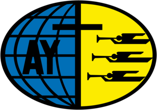
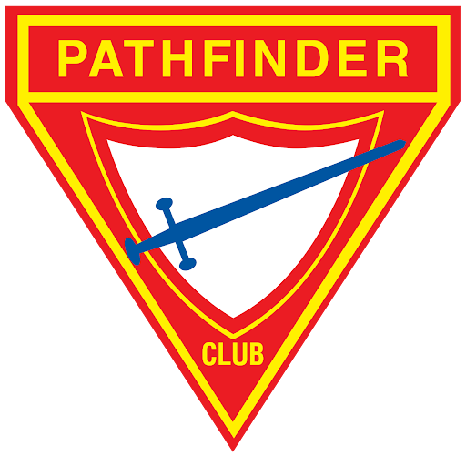
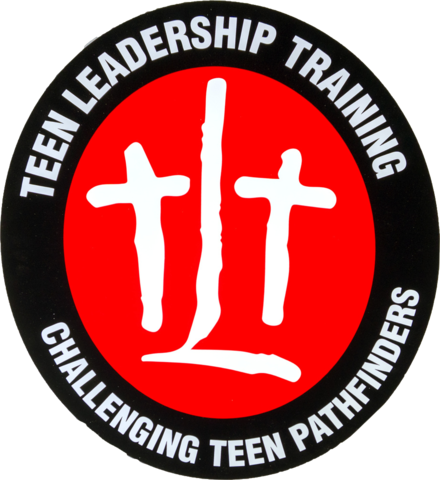
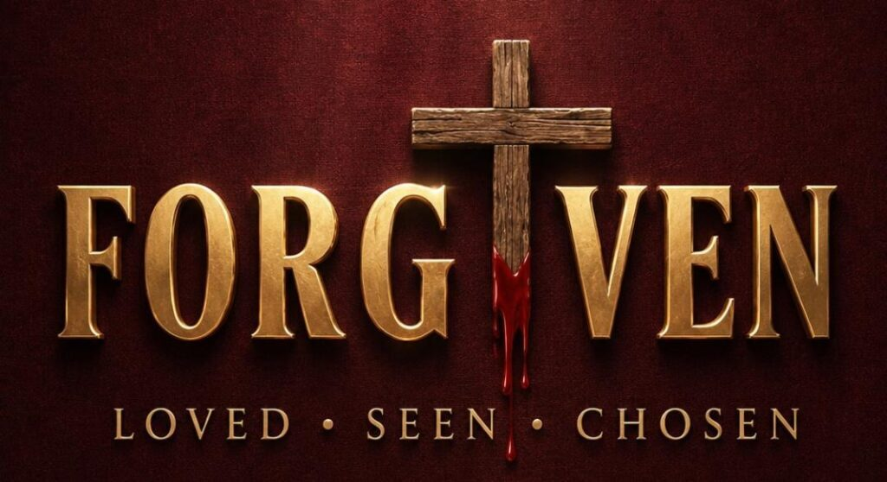
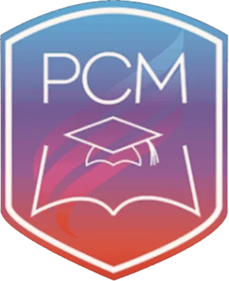
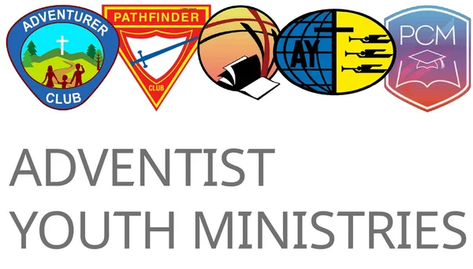

Ages 16–35 · Adventist Youth · Young adults, campus and evangelism
Historically the Adventist Youth Society, this ministry serves young men and women from 16 to 30: the mission-ready generation, with a unique influence to reach their peers, using their talents, creativity and testimonies to impact their church and the world.

Why AY
The department encourages leaders and churches to take whatever approach is necessary, the traditional model or another creative method, to ensure that youth and young adults in our churches and their communities are ministered to and reached for Jesus.
Not your parents' youth group. Real questions, honest worship and a walk with Jesus you choose for yourself.
Small groups, retreats and Sabbath afternoons with people your age who pray for you by name.
AY is created by youth for youth. You plan the programs, preach, lead worship and run the events.
Outreach, service projects and mission trips across the five boroughs, Long Island and beyond.
Evangelism training, leadership certification and campus ministry that sharpen what God has given you.
Millions of Adventist young people on every continent, united by one aim and one motto.
Our model
“And I, if I be lifted up from the earth, will draw all men unto me.”John 12:32
Spiritual renewal: time with God in prayer and the Word, following Jesus as His apprentices.
Luke 6:12Relational, incarnational and intergenerational: small groups and communities of faith that belong together.
Luke 6:13My story, His story, our story: sharing Jesus one to one, in small groups and in public evangelism.
Luke 6:17–19The Adventist Youth ministry model of the General Conference, drawn from a day in the life of Jesus in Luke 6.
What AY stands for
Dignangely Jimenez
Associate Director · AY Ministry
To lead young people into a saving relationship with Jesus Christ and help them embrace His call to discipleship.
The Advent message to all the world in my generation.
The love of Christ compels us.
“Loving the Lord Jesus, I promise to take an active part in the youth ministry of the church, doing what I can to help others and to finish the work of the gospel in all the world.”
It began with two boys, Luther Warren and Harry Fenner, kneeling in prayer on a country lane in Michigan. Since 1926 its objective has been “to save from sin and guide into service.”
Find your place
Many young adults grew up as Pathfinders and Teen Leadership Trainees; many find AY for the first time through a friend, a campus group or a retreat.

Ages 10–15Pathfinders
Ages 14–17Teen Leadership TrainingAY Ministries · 16 and upFor leadersAYLC certificationThe Sabbath afternoon program in every local church, led by young people for young people.
Find a society
Retreats, the LIFE Tour, small groups and the annual young adult retreat at Camp Berkshire.
Explore Young Adults
Adventist student groups on public and private campuses across the city and Long Island.
Explore PCMA practical course in sharing faith, giving Bible studies and leading public outreach.
Explore the SchoolPlan the year
The rhythm every society follows. Dates change each year; the current calendar is on the Events page.
Cycle to be confirmed
The milestones and months below are a draft frame, not the real calendar. The Director confirms the correct annual cycle for this ministry: which events happen, in what order, and in which month.
Get involved
AY is built on young people leading. Every society needs these roles filled.
Mission
Urban outreach, campus evangelism and short-term mission trips are how AY lives out its aim in Greater New York.
Coming up
Life in AY Ministries
Join
Almost every Seventh-day Adventist church in the conference has an AY society. Pick your area.
Shaded areas are the Greater New York Conference; gray areas belong to neighboring conferences, including the New York Conference to the north and west.
Example Church AY Society
Brooklyn · meets Sundays 10 am
Example Church AY Society
Queens · meets Sabbath afternoons
Example Church AY Society
The Bronx · meets Sundays 9 am
Example rows. The real list comes from the directory the Director provides.
For young adults
Answers below are drafts for the Director to confirm.
AY Ministries serves young people from 16 to 35 through local AY societies, Young Adults, Public Campus Ministry and the School of Evangelism. Pathfinders and Adventurers are the ministries for younger children.
Yes. Retreats, small groups and campus meetings are open to anyone; many people find their way back through a friend.
See the Public Campus Ministry page for the list of campuses, or email the PCM coordinator to start one where you study.
Each church sends delegates through its AY society; registration is open now on the Events page.
For leaders
The steps to start or revive an AY society or a campus group, the tools for the year, the people who support you, and the official guides from the North American Division and the General Conference.
How to start
Most churches have an AY society on the books; many need new life. These are the steps in Greater New York; the youth office walks you through each one.
Agree to start or restart the society and elect an AY leader and officers.
Tell the conference your society is active and who leads it.
Attend the conference AY leadership training and plan your first quarter.
Set a Sabbath afternoon rhythm: worship, Bible study, fellowship and service.
Hold your first meeting and invite friends, students and returning members.
We will connect you with an AY coordinator.
Official guides
Maintained by the North American Division and the General Conference, so you always get the current edition.

General ConferenceTo startSenior Youth Leaders and Pastors’ ManualsThe Senior Youth Leaders Manual and the Pastors and Elders Manual on Youth Ministry, which sets out a society’s officers, plus the AY Story and a mentoring series.
North American DivisionTo startAdventist Christian Fellowship resourcesSeven steps for launching a campus chapter, the NAD Public Campus Ministries manual and a sample chapter constitution.
AY leaders
Program ideas, training and the forms for trips and events.
Open the resource libraryPeople to call
The conference team and the area coordinators who support every society.
Pr. Christian Genao
Youth Director
Dignangely Jimenez
Associate Director · AY Ministry
Kebrina Stephenson
Lead Area Coordinator · The Bronx
Benjamin Leconte
Lead Area Coordinator · Brooklyn
Farah Beaubrun
Lead Area Coordinator · Long Island
Luz Arelis Sanchez
Lead Area Coordinator · Manhattan
Natalie Moving-Richards
Lead Area Coordinator · Queens
Judey Austin
Lead Area Coordinator · Staten Island
Ivy Opoku-Nti
Lead Area Coordinator · Upstate
Dorothy Rota
Lead Area Coordinator · Upstate
Beyond Greater New York
Our AY ministry is part of the Adventist youth ministry of the North American Division and the General Conference. Their sites carry the official curriculum, standards and resources.
Youth and young adult ministry for North America, with training and resources for local churches.
Visit nadadventist.org General Conference · Adventist Youth MinistriesYoung AdultsYoung adult ministry for the worldwide church, from Global Youth Day to Public Campus Ministries.
Visit gcyouthministries.orgFor leaders
Manuals, certifications and curriculum, kept current by the North American Division and the General Conference.
The leadership curriculum for young adult and campus ministry leaders, with its requirements card.
North American DivisionFor leadersYoung Adult MinistryHow the North American Division approaches ministry with young adults, with links to leader training.
General ConferenceStart and leadPublic Campus MinistryThe world church’s PCM Manual and PCM Student Handbook.
General ConferenceFor leadersPCM Competency CertificationLevel 1 leadership training for campus ministry leaders.
Ready to start?
Find a society, join a campus group, or bring the LIFE Tour to your church.